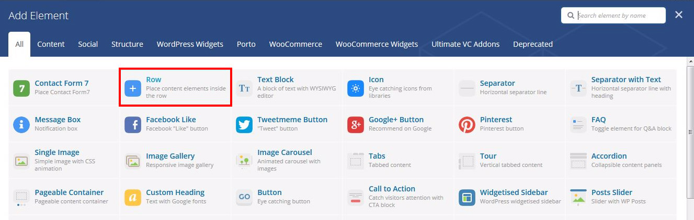
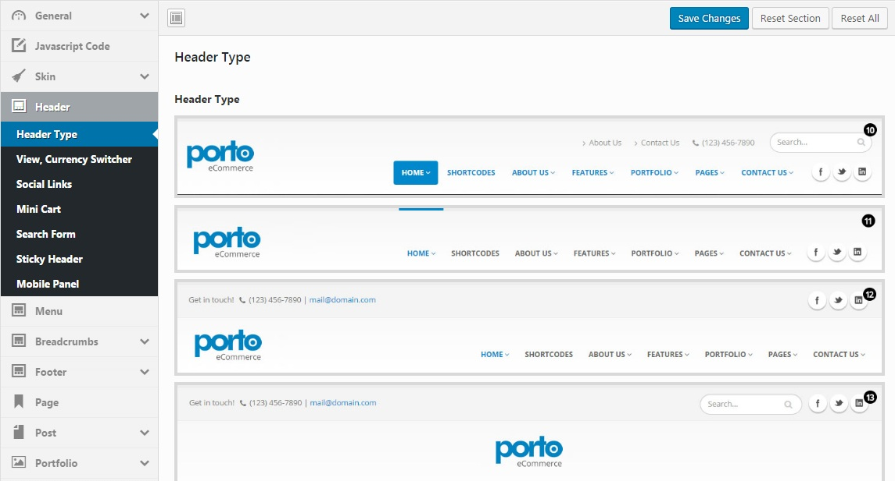
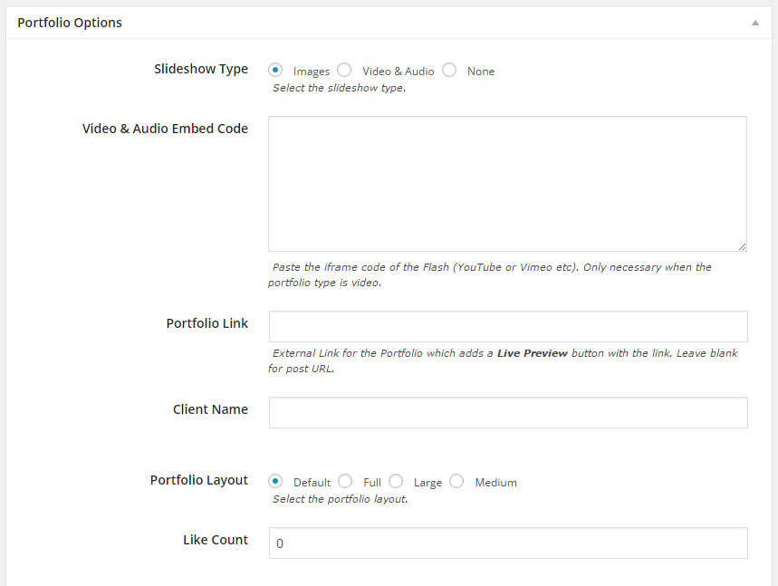

Getting Started
Welcome to Porto Wordpress!
We would like to thank you for purchasing Porto Wordpress + eCommerce Theme!
We are very pleased you have chosen Porto Wordpress for your website, you will be never disappointed!
Before you get started, please be sure to always check out this documentation. We outline all kinds of good information, and provide you with all the details you need to use Porto Wordpress. Porto Wordpress can only be used with Wordpress and we assume that you already have Wordpress installed and ready to go.
If you are unable to find your answer here in our documentation, we encourage you to contact us through our support system with your site CPanel (or FTP) and wordpress admin details. We're very happy to help you and you will get reply from us more faster than you expected.
Thank you, we hope you to enjoy using Porto Wordpress!
Wordpress Information
To install this theme you must have a working version of WordPress already installed. If you need help installing WordPress, follow below sites and tutorials from WordPress.com, hope everything that you need are there.
- WordPress Codex - General info about WordPress and how to install on your server.
- Instructional Video - Awesome How-To video created by Woo Themes.
- First Steps With WordPress - General info about multiple topics about WordPress.
- FAQ New To WordPress - The most popular FAQ's regarding WordPress.

Installation
Contents
Requirements for Theme
You need to agree the following requirements.
- Wordpress 4.0 or higher.
- PHP 5.4 or higher.
- MySQL 5 or higher.
- Memory Limit 64M or higher.
Below is a list of items you should ensure your host can comply with. We recommend using A2 Hosting or Blue Host for all your hosting needs.
- Check to ensure that your web host has the minimum requirements to run WordPress.
- Always make sure they are running the latest version of WordPress.
- You can download the latest release of WordPress from official WordPress website.
- Always create secure passwords for FTP and Database.
Recommended PHP Configuration Limits
Many issues are all related to low PHP configuration limits. The solution is to increase the PHP limits. You can do this on your own or contact your web host and ask them to increase those limits to a minimum as follows:
- max_execution_time 180
- memory_limit 64M
- post_max_size 32M
- upload_max_filesize 32M
Installation Video
Theme Installation
Contents
Install Theme via FTP Client
-
Unzip porto.zip file (the zip file is inside Theme files folder you have downloaded from ThemeForest). Connect to your FTP server and navigate to the folder where your WordPress is installed. Go to wp-content/themes/ and upload porto folder (the path will look like this: wp-content/themes/porto).

-
Open wordpress admin panel (navigate through web browser to the folder where you have installed the WordPress e.g www.your_domain.com/wp-admin/) and go
Appearance > Themeson admin sidebar. Activateportotheme.
-
After activate theme, you will see Welcome page.
-
Please go System Status and check wordpress and server environment.
Install Theme via WordPress Admin Panel
Open wordpress admin panel (navigate through web browser to the folder where you have installed the WordPress e.g www.your_domain.com/wp-admin/) and go Appearance > Themes on admin sidebar. Activate porto theme.
Click Add New link and click Upload Theme link. Please upload porto.zip file (the zip file is inside Theme files folder you have downloaded from ThemeForest).
Once the theme is done uploading it will automatically install.
Open wordpress admin panel (navigate through web browser to the folder where you have installed the WordPress e.g www.your_domain.com/wp-admin/) and go Appearance > Themes on admin sidebar. Activate porto theme.
After activate theme, you will see Welcome page.
Please go System Status and check wordpress and server environment.
Plugin Installation
After installing and activating the theme, you should install and activate the required and recommended plugins in Porto > Plugins.
Please install the plugin.
Porto theme includes various plugins - Visual Composer, Porto Functionality, Revolution Slider plugins and etc.
Required plugins:
- WPBakery Visual Composer - Drag and drop page builder for WordPress. Take full control over your WordPress site, build any layout you can imagine – no programming knowledge required.
- Porto Functionality - Gathered all features that Porto provides including shortcodes, widgets and content types. We merged old "Porto Content Types", "Porto Shortcodes", "Porto Widgets" plugins into one since Porto 4.0
Recommended plugins:
- Revolution Slider - Revolution Slider is the most advanced responsive WordPress slider plugin with layer.
- Dynamic Featured Image - Dynamically adds multiple featured image or post thumbnail functionality to your posts, pages and custom post types.
- Woocommerce - An e-commerce toolkit that helps you sell anything. Beautifully.
- MailPoet Newsletters - Create and send newsletters or automated emails. Capture subscribers with a widget. Import and manage your lists. MailPoet is a sweet plugin maintained and supported with love by a team of a dozen.
- Contact Form 7 - Just another contact form plugin. Simple but flexible.
- Instagram Slider - Support Instagram social features in some demos.
Other plugins:
- Really Simple CAPTCHA - Really Simple CAPTCHA is a CAPTCHA module intended to be called from other plugins. It is originally created for my Contact Form 7 plugin.
- Regenerate Thumbnails - Allows you to regenerate all thumbnails after changing the thumbnail sizes.
- Envato WordPress Toolkit - WordPress toolkit for Envato Marketplace hosted items. Currently supports the following theme functionality: install, upgrade, & backups during upgrade.
- WP Sitemap Page - Add a sitemap on any page/post using the simple shortcode [wp_sitemap_page].
- YITH WooCommerce Ajax Navigation - YITH WooCommerce Ajax Navigation allows user to filter products in Shop page without reloading the page.
- YITH WooCommerce Ajax Search - YITH WooCommerce Ajax Search allows your users to search products in real time.
- YITH WooCommerce Wishlist - YITH WooCommerce Wishlist allows you to add Wishlist functionality to your e-commerce.
Plugin Configuration
Contents
-
Visual Composer
Visual Composer for WordPress is drag and drop frontend and backend page builder plugin that will save you tons of time working on the site content. You will be able to take full control over your WordPress site, build any layout you can imagine – no programming knowledge required. Moreover, now you can choose either work on a backend or move your page building process to frontend and instantly see changes you make.
You can see here for more details.
After installing the Visual Composer please go to
Visual Composer > Role Managerand make sure to check the following checkboxes under Content Types:post, page, product, block, faq, member & portfolio. After making the changes please clickSave Changesbutton. -
Woocommerce
WooCommerce is the most popular WordPress eCommerce plugin. Packed full of features, perfectly integrated into your self-hosted WordPress website.
You can see here for more details and woocommerce documentation.
- Install Woocommerce Pages
Important!
If you want to import dummy data, you can skip to install woocommerce pages.
You can see the following message after install woocommerce plugin and you should click Install Woocommerce Pages.
You can see "Shop", "Cart", "Checkout" and "My Account" pages in Pages on admin sidebar.
- Change Image Sizes
You can change the product image sizes in Woocommerce > Settings > Products > Display > Product Images on admin sidebar.
We used the following image sizes on our demo sites:
Catalog Images: 300 x 400 or 300 x 300
Single Product Image: 500 x 666 or 500 x 500
Product Thumbnails: 90 x 90
After change the image sizes, you should regenerate all the thumbnails using Regenerate Thumbnails plugins.
- Enable Registration on My Account
Please go to
WooCommerce > Settings > Account > Registration Optionsand enable registration on the "My Account" page. -
Regenerate Thumbnails
Regenerate Thumbnails allows you to regenerate the thumbnails for your image attachments. This is very handy if you've changed any of your thumbnail dimensions (via Settings -> Media) after previously uploading images or have changed to a theme with different featured post image dimensions.
You can either regenerate the thumbnails for all image uploads, individual image uploads, or specific multiple image uploads.
You can see here for more details.
Please go
Tools > Regen.Thumbnailsand clickRegenerate All Thumbnails.
Demo Install
You can install demo in Porto > Install Demos.
Please click Install button and configure the installing options and install demo.
Please install demo.
After install demo, please import revolution slider in Theme Package/Revolution Sliders Demo folder.
Compatible Plugins for Special Demos!
You don't need to install Woocommerce, WP Sitemap Page, MailPoet Newsletters, YITH Woocommerce plugins in Full Sites Demo like Construction, Law Firm, Digital Agency, Restaurant, Hotel, Medical, Wedding, etc.
We used Post Views Counter plugin in Wedding Demo. After install this plugin, please configure the following options in Settings > Post Views Counter > Display.
- We used WP Domain Checker plugin in Corporate Hosting Demo.
Update Guide
Contents
Before Update
- We recommend you have a current backup of your site including wp-content folder, wp-config.php file and .htaccess file and a copy of wordpress database. If you are not familiar with how to do this, you can use several plugins such as UpDraft Plus and WordPress Backup Buddy. And you should backup porto theme options in Appearance > Theme Options > Import / Export.
- You should completely remove all previous porto theme folder.
- You shouldn't rename porto theme folder.
- You should reset browser cache, server cache and plugin cache.
- You should update required and recommended plugins.
Update Theme
Traditional Update Method
This method does require more steps and manual work. First you need to manually download the new theme package from your Themeforest account. Once you have the new theme package, you can choose to upload the theme via WordPress or via FTP. Please see the information below for how to download new files, and install it via WP or via FTP.
HOW TO DOWNLOAD NEW THEME FILES FROM THEMEFOREST
Step 1 - Log into your Themeforest account and navigate to your downloads tab. Find the "Porto" theme purchase.
Step 2 - Click the "download" button next to it and choose to download the "Installable WordPress Theme" which is just the WordPress file, or choose the "Main Files" which is the entire package that contains everything.
Step 3 - Then you need to decide if you want to install the update via FTP or via WordPress. Directions for both methods are below.
HOW TO UPDATE YOUR THEME VIA FTP
Step 1 - Go to "wp-content > themes" location and backup your "porto" theme folder by saving it to your computer, or you can choose to simply delete it. Your content will not be lost.
Step 2 - Retrieve the "porto.zip" file from your new Themeforest download and extract the file to get the "porto" theme folder.
Step 3 - Then simply drag and drop the new "porto" theme folder into "wp-content > themes" location. Choose to "Replace" the current one if you did not delete it.
Step 4 - Lastly, update the included plugins. You will see a notification message letting you know the plugins have a new version and need to be updated. You should update the plugins. You can see Update Plugin for more details.
Step 5 - Please go Appearance > Theme Options on admin sidebar and click again "Save Changes" button.
HOW TO UPDATE YOUR THEME VIA WORDPRESS
Step 1 - You need to deactivate the current "porto" theme in the "Appearance > Themes" section by simply activating a different theme. Once you activate a different theme, you can delete the porto theme. Don't worry, your content will not be lost.
Step 2 - Retrieve the "porto.zip" file from your new Themeforest download. If you downloaded the "Main Files" from Themeforest, then you need to unzip the archive file you received, the porto.zip will be inside of it.
Step 3 - Then simply upload the "porto.zip" file in the "Appearance > Themes" section. Click on the "Install Themes" tab at the top and choose to upload the zip file.
Step 4 - Once it uploads, choose to activate the theme.
Step 5 - Lastly, update the included plugins. You will see a notification message letting you know the plugins have a new version and need to be updated. You should update the plugins. You can see Update Plugin for more details.
Step 6 - Please go Appearance > Theme Options on admin sidebar and click again "Save Changes" button.
Using Envato Toolkit
The Envato WordPress Toolkit plugin lets you view your ThemeForest purchases within the WordPress dashboard and select whether or not to receive updates.
HOW TO USE ENVATO TOOLKIT PLUGIN
Step 1 - You will need to generate an API key to link your WordPress site to your Themeforest account. Login to Themeforest, go to your dashboard and click on “My Settings.” The API Keys screen allows you to generate a free API key.
Step 2 - Install and activate the toolkit plugin. A new menu item, "Envato Toolkit", will appear in the admin sidebar. Click on the sidebar link and enter your marketplace username and secret API key. Click "Save Settings." All of your theme purchases will now appear on this page after it refreshes.
Step 3 - The plugin will now alert you to theme updates – so long as you check the toolkit settings regularly. Click on "install automatically" beside each of your themes to automatically update them. The toolkit settings page also allows you to install themes that you haven’t already uploaded to your site, delete ones you don’t use and view version details. You can also set up theme backups.
Step 4 - Please go Appearance > Theme Options on admin sidebar and click again "Save Changes" button.
Update Plugins
Like WordPress itself, you can update plugins with a one click method. To do that, go to the ‘Updates’ section of your administration panel.
If there are some plugins that can be updated, they will appear here, right below the part which tells you if a new version of WordPress is available or not.
To update your plugins, select them and click on the ‘Update Plugins’ button.
Whether for plugins, you will be led to another page which will inform you about the progress of the update, just as it does with the WordPress update.
Note that for plugins, another section will also allow you to update in one click: the ‘Installed Plugins’ section in the Dashboard. If a plugin can be updated, a message will appear right below it, with a link to update it automatically. You can even select all of your plugins and chose ‘Update’ in the drop down list to bulk update the ones that need it.
Important!
We embedded visual composer, ultimate addons for visual composer, revolution slider, porto content types, porto widgets and porto shortcodes plugins. If you couldn't update these plugins, you should update manually these plugins.
- Please go Plugins.
- Select and deactivate these plugins.
- Select and delete these plugins.
- Please go Appearance > Install Plugins.
- Select and install these plugins.
- Select and activate these plugins.
Shortcodes
Before Use Porto Shortcodes
You should install and activate Porto Functionality plugin.
- Please go in Appearance > Install Plugins on admin sidebar.
- You should select and install porto shortcodes.
- You should activate this plugin.
How to add porto shortcodes using visual composer
You should enable visual composer editor.
You should select the element. If you click the following button, will be show the popup.
You can add visual composer, porto shortcodes, ultimate addons elements.
How to add porto shortcodes in tinymce editor
You should click porto shortcodes button.
You should select porto shortcode.
You should configure shortcode params and click Insert Shortcode.
Will be add shortcode in the content.
Site Speed Up
General Information
We recommend using the Better Wordpress Minify and WP Super Cache, W3 Total Cache plugins.
Excluding pages from the cache
If using caching plugins, make sure you exclude the following pages from the cache through their respective settings panels:
- Cart
- My Account
- Checkout
- Wishlist
Better Wordpress Minify
This plugin allows you to minify your CSS and JS files for faster page loading for visitors. This plugin uses the PHP library Minify and relies on WordPress's enqueueing system rather than the output buffer (will not break your website in most cases). This plugin is very customizable and easy to use.
Please reference here for more details.
You can use this plugin with WP Super Cache plugin.
- Please install and activate Better Wordpress Minify plugin.
- Please go BWP Minify on admin sidebar.
- Please configure the General Options, Advanced Options, Manage enqueued Files sections.
- Please check your site after complete the configuration.
Page Crashed!
- Please go BWP Minify > Manage enqueued Files.
- Please click Scripts to NOT minify and add the script handles to be ignored (not minified).
- Please click Styles to NOT minify and add the style handles to be ignored (not minified).
For example, you can add the following code to ignore the visual composer css file.
WP Super Cache
This plugin is very fast caching plugin for WordPress.
Please reference here for more details.
You can use this plugin with Better Wordpress Minify plugin.
- Please install and activate WP Super Cache plugin.
- Please go Settings > WP Super Cache on admin sidebar.
- Please configure the Easy, Advanced, CDN, Contents, Preload, Plugins, Debug sections.
- Please check your site after complete the configuration.
Important!
You should exclude the my account, cart, checkout, wishlist pages if you are using woocommerce plugin.
- Please check the recommended options in Advanced section.
- Please add the following code in Accepted Filenames & Rejected URIs if you are using YITH Woocommerce Wishlist plugin.
W3 Total Cache
This plugin is the most highly rated and most complete WordPress performance plugin. Dramatically improve the speed and user experience of your site. Add browser, page, object and database caching as well as minify and content delivery network (CDN) to WordPress.
Please reference here for more details.
- Please install and activate W3 Total Cache plugin.
- Please go Performance > General Settings on admin sidebar.
- Please configure the General, Page Cache, Minify, Database Cache, Object Cache, Browser Cache and more sections.
- Please configure the more options in the sub menus of Performance on admin sidebar
- Please check your site after complete the configuration.
Important!
- Please add mfunc to the Ignored comment stems option in the Minify settings.
Translation
General Information
If you are new to translating WordPress, you're in the right place! In general, internationalization and localization (commonly abbreviated as i18n and l10n respectively) are terms used to describe the effort to make WordPress available in languages other than English for people from different locales. The actual localization is done using the GNU gettext framework, which is used by WordPress itself including the themes and plugins.
In order to make WordPress recognize the language to which you want to translate the core WordPress, the theme or the plugins, you have to define the language within the wp-config.php file or change a setting within the dashboard. The process is dependent on the WordPress version and is described below:
You can see wordpress localization documentation for more details.
Method 1: Storing Inside The Theme and Plugin Folder
This is is the traditional method, and the method most of our users use. The locate the Languages folder, follow this path: Despite this being the most popular, this method has one downside. Whenever users update the theme and the plugin, the whole Theme folder and Plugin Folder are replaced with a new and updated folder, which in turn overwrites their translation files. If you choose to store your language files using this method, remember that the file structure is only the language name. For example, if the language files are in the Deutsch language, the file names would be de_DE.mo and de_DE.po. You can translate default po file with POEdit tool. You can see here for more details.
wp-content/themes/porto/languages
wp-content/plugins/porto-functionality/languages
IMPORTANT NOTE - If you choose to use this method, don't forget to backup files you don't want to lose before updating Porto.
Method 2: Use WPML with Porto
WPML is the most popular plugin for multi language support, Porto is fully compatible with WPML. Below you will find documentation their team created for using WPML plugin with Porto. If you've purchased WPML and have any questions or issues, please check the links below.
- WPML Plugin - The highly recommended plugin to manage multi-lingual sites
- WPML Forum Support - If you bought WPML then you get free support from their amazing team
- Translating Widgets - Tutorial recommended by wpml team for translating widgets
Click Here To Purchase WPML Plugin!
Build Your Site
Contents
- Build Your Site
- Wordpress Configuration
- Theme Layout
- Theme Options
- Menu Setup
- One Page Setup
- Header Setup
- Extra Class Names
Before Build Your Site
You need to configure wordpress and the plugins.
Please read carefully Theme Installation / Plugin Configuration and Build Your Site / Wordpress Configuration.
Wordpress Configuration
You can adjust WordPress settings as follows:
- You can set Site Title in Settings > General.
- You can set Blog pages show at most in Settings > Reading.
- You can select Front Page and Posts Page in Settings > Reading.
- You can set Discussion settings in Settings > Discussion.
- You can change Image sizes in Settings > Media.
We used the following sizes on our demo sites:
Thumbnail size: 50 x50
Medium size: 500 x 500
Large size: 1024 x 1024 - You should ensure that a non-default permalink setting is selected, e.g. Month and name in Settings > Permalinks.
Theme Layout
Theme Options
You should configure theme options in Appearance > Theme Options on admin sidebar.
You can see Theme Options for more details.
One Page Setup
Create One Page Menu
- Please go
Appearance > Menuson admin sidebar. - Click
Create a new menu. - Add
Custom Linksmenu items. Type the anchor name of page section in theURLfield. - Click
Save Menubutton after added the menu items.
Create One Page
- Please go
Pages > Add Newon admin sidebar. - Type the page title.
- Add
Visual Composer Rowshortcodes. When edit this shortcode, you should addRow ID.
When edit the row shortcode, you can configurePorto Options. - Add the content inside of
Visual Composer Rowshortcode. - Select the
One Page MenuinView Options. - Click
Publishbutton.
Header Setup
You can configure header options in Appearance > Theme Options > Header.
-
Porto theme have several header types. You can select a header type in Header > Header Type.

-
You can show wpml language switcher or wpml currency switcher.
You should enable Show WPML Language Switcher and Show WPML Currency Switcher options in Header > View, Currency Switcher.
Before enable these options, you should install WPML and WooCommerce Multilingual - run WooCommerce with WPML plugins.
You should configure wpml language switcher in WPML > Languages > Language switcher options. You can see here for more details.
You should configure wpml currency switcher in WPML > WooCommerce Multilingual > Manage Currencies. You can see here for more details.
-
You can input a welcome message and a contact info in Header.
-
You can configure the social links (facebook, twitter, pinterest, youtube, instagram, etc) in Header > Social Links.
-
You can configure the mini cart and the search form options in Header > Mini Cart, Search Form.
-
You can configure the sticky header in Header > Sticky Header.
-
You can configure the mobile panel in Header > Mobile Panel.
Extra Class Names
Margin Classes
.m-xs {
margin: 5px !important;
}
.m-sm {
margin: 10px !important;
}
.m {
margin: 15px !important;
}
.m-md {
margin: 20px !important;
}
.m-lg {
margin: 30px !important;
}
.m-xl {
margin: 40px !important;
}
.m-xlg {
margin: 50px !important;
}
.m-xxl {
margin: 60px !important;
}
.m-n {
margin: 0 !important;
}
.m-l-none {
margin-left: 0 !important;
}
.m-l-xs {
margin-left: 5px !important;
}
.m-l-sm {
margin-left: 10px !important;
}
.m-l {
margin-left: 15px !important;
}
.m-l-md {
margin-left: 20px !important;
}
.m-l-lg {
margin-left: 30px !important;
}
.m-l-xl {
margin-left: 40px !important;
}
.m-l-xlg {
margin-left: 50px !important;
}
.m-l-xxl {
margin-left: 60px !important;
}
.m-l-n-xxs {
margin-left: -1px !important;
}
.m-l-n-xs {
margin-left: -5px !important;
}
.m-l-n-sm {
margin-left: -10px !important;
}
.m-l-n {
margin-left: -15px !important;
}
.m-l-n-md {
margin-left: -20px !important;
}
.m-l-n-lg {
margin-left: -30px !important;
}
.m-l-n-xl {
margin-left: -40px !important;
}
.m-l-n-xlg {
margin-left: -50px !important;
}
.m-l-n-xxl {
margin-left: -60px !important;
}
.m-t-none {
margin-top: 0 !important;
}
.m-t-xxs {
margin-top: 1px !important;
}
.m-t-xs {
margin-top: 5px !important;
}
.m-t-sm {
margin-top: 10px !important;
}
.m-t {
margin-top: 15px !important;
}
.m-t-md {
margin-top: 20px !important;
}
.m-t-lg {
margin-top: 30px !important;
}
.m-t-xl {
margin-top: 40px !important;
}
.m-t-xlg {
margin-top: 50px !important;
}
.m-t-xxl {
margin-top: 60px !important;
}
.m-t-n-xxs {
margin-top: -1px !important;
}
.m-t-n-xs {
margin-top: -5px !important;
}
.m-t-n-sm {
margin-top: -10px !important;
}
.m-t-n {
margin-top: -15px !important;
}
.m-t-n-md {
margin-top: -20px !important;
}
.m-t-n-lg {
margin-top: -30px !important;
}
.m-t-n-xl {
margin-top: -40px !important;
}
.m-t-n-xlg {
margin-top: -50px !important;
}
.m-t-n-xxl {
margin-top: -60px !important;
}
.m-r-none {
margin-right: 0 !important;
}
.m-r-xs {
margin-right: 5px !important;
}
.m-r-sm {
margin-right: 10px !important;
}
.m-r {
margin-right: 15px !important;
}
.m-r-md {
margin-right: 20px !important;
}
.m-r-lg {
margin-right: 30px !important;
}
.m-r-xl {
margin-right: 40px !important;
}
.m-r-xlg {
margin-right: 50px !important;
}
.m-r-xxl {
margin-right: 60px !important;
}
.m-r-n-xxs {
margin-right: -1px !important;
}
.m-r-n-xs {
margin-right: -5px !important;
}
.m-r-n-sm {
margin-right: -10px !important;
}
.m-r-n {
margin-right: -15px !important;
}
.m-r-n-md {
margin-right: -20px !important;
}
.m-r-n-lg {
margin-right: -30px !important;
}
.m-r-n-xl {
margin-right: -40px !important;
}
.m-r-n-xlg {
margin-right: -50px !important;
}
.m-r-n-xxl {
margin-right: -60px !important;
}
.m-b-none {
margin-bottom: 0 !important;
}
.m-b-xs {
margin-bottom: 5px !important;
}
.m-b-sm {
margin-bottom: 10px !important;
}
.m-b {
margin-bottom: 15px !important;
}
.m-b-md {
margin-bottom: 20px !important;
}
.m-b-lg {
margin-bottom: 30px !important;
}
.m-b-xl {
margin-bottom: 40px !important;
}
.m-b-xlg {
margin-bottom: 50px !important;
}
.m-b-xxl {
margin-bottom: 60px !important;
}
.m-b-n-xxs {
margin-bottom: -1px !important;
}
.m-b-n-xs {
margin-bottom: -5px !important;
}
.m-b-n-sm {
margin-bottom: -10px !important;
}
.m-b-n {
margin-bottom: -15px !important;
}
.m-b-n-md {
margin-bottom: -20px !important;
}
.m-b-n-lg {
margin-bottom: -30px !important;
}
.m-b-n-xl {
margin-bottom: -40px !important;
}
.m-b-n-xlg {
margin-bottom: -50px !important;
}
.m-b-n-xxl {
margin-bottom: -60px !important;
}
Padding Classes
.p-xs {
padding: 5px !important;
}
.p-sm {
padding: 10px !important;
}
.m {
padding: 15px !important;
}
.p-md {
padding: 20px !important;
}
.p-lg {
padding: 30px !important;
}
.p-xl {
padding: 40px !important;
}
.p-xlg {
padding: 50px !important;
}
.p-xxl {
padding: 60px !important;
}
.p-n {
padding: 0 !important;
}
.p-l-none {
padding-left: 0 !important;
}
.p-l-xs {
padding-left: 5px !important;
}
.p-l-sm {
padding-left: 10px !important;
}
.p-l {
padding-left: 15px !important;
}
.p-l-md {
padding-left: 20px !important;
}
.p-l-lg {
padding-left: 30px !important;
}
.p-l-xl {
padding-left: 40px !important;
}
.p-l-xlg {
padding-left: 50px !important;
}
.p-l-xxl {
padding-left: 60px !important;
}
.p-l-n-xxs {
padding-left: -1px !important;
}
.p-l-n-xs {
padding-left: -5px !important;
}
.p-l-n-sm {
padding-left: -10px !important;
}
.p-l-n {
padding-left: -15px !important;
}
.p-l-n-md {
padding-left: -20px !important;
}
.p-l-n-lg {
padding-left: -30px !important;
}
.p-l-n-xl {
padding-left: -40px !important;
}
.p-l-n-xlg {
padding-left: -50px !important;
}
.p-l-n-xxl {
padding-left: -60px !important;
}
.p-t-none {
padding-top: 0 !important;
}
.p-t-xxs {
padding-top: 1px !important;
}
.p-t-xs {
padding-top: 5px !important;
}
.p-t-sm {
padding-top: 10px !important;
}
.p-t {
padding-top: 15px !important;
}
.p-t-md {
padding-top: 20px !important;
}
.p-t-lg {
padding-top: 30px !important;
}
.p-t-xl {
padding-top: 40px !important;
}
.p-t-xlg {
padding-top: 50px !important;
}
.p-t-xxl {
padding-top: 60px !important;
}
.p-t-n-xxs {
padding-top: -1px !important;
}
.p-t-n-xs {
padding-top: -5px !important;
}
.p-t-n-sm {
padding-top: -10px !important;
}
.p-t-n {
padding-top: -15px !important;
}
.p-t-n-md {
padding-top: -20px !important;
}
.p-t-n-lg {
padding-top: -30px !important;
}
.p-t-n-xl {
padding-top: -40px !important;
}
.p-t-n-xlg {
padding-top: -50px !important;
}
.p-t-n-xxl {
padding-top: -60px !important;
}
.p-r-none {
padding-right: 0 !important;
}
.p-r-xs {
padding-right: 5px !important;
}
.p-r-sm {
padding-right: 10px !important;
}
.p-r {
padding-right: 15px !important;
}
.p-r-md {
padding-right: 20px !important;
}
.p-r-lg {
padding-right: 30px !important;
}
.p-r-xl {
padding-right: 40px !important;
}
.p-r-xlg {
padding-right: 50px !important;
}
.p-r-xxl {
padding-right: 60px !important;
}
.p-r-n-xxs {
padding-right: -1px !important;
}
.p-r-n-xs {
padding-right: -5px !important;
}
.p-r-n-sm {
padding-right: -10px !important;
}
.p-r-n {
padding-right: -15px !important;
}
.p-r-n-md {
padding-right: -20px !important;
}
.p-r-n-lg {
padding-right: -30px !important;
}
.p-r-n-xl {
padding-right: -40px !important;
}
.p-r-n-xlg {
padding-right: -50px !important;
}
.p-r-n-xxl {
padding-right: -60px !important;
}
.p-b-none {
padding-bottom: 0 !important;
}
.p-b-xs {
padding-bottom: 5px !important;
}
.p-b-sm {
padding-bottom: 10px !important;
}
.p-b {
padding-bottom: 15px !important;
}
.p-b-md {
padding-bottom: 20px !important;
}
.p-b-lg {
padding-bottom: 30px !important;
}
.p-b-xl {
padding-bottom: 40px !important;
}
.p-b-xlg {
padding-bottom: 50px !important;
}
.p-b-xxl {
padding-bottom: 60px !important;
}
.p-b-n-xxs {
padding-bottom: -1px !important;
}
.p-b-n-xs {
padding-bottom: -5px !important;
}
.p-b-n-sm {
padding-bottom: -10px !important;
}
.p-b-n {
padding-bottom: -15px !important;
}
.p-b-n-md {
padding-bottom: -20px !important;
}
.p-b-n-lg {
padding-bottom: -30px !important;
}
.p-b-n-xl {
padding-bottom: -40px !important;
}
.p-b-n-xlg {
padding-bottom: -50px !important;
}
.p-b-n-xxl {
padding-bottom: -60px !important;
}
Border Radius Classes
.br-none {
border-radius: 0 !important;
}
.br-normal {
border-radius: 5px !important;
}
.br-thick {
border-radius: 7px !important;
}
Optimization
After building the site, you may need to optimize your site to increase the page speed. Porto theme provides optimization section to allow you to use bootstrap, visual composer, font awesome and revolution slider features only what you used for. This will reduce around 500KB of page size.
Porto Theme Options
Theme Options
Porto comes with advanced settings panel that is loaded with options. We have the options organized into logical tabbed sections, and each option has a description of what it will do on the front end. Because of the sizable amount of options Porto provides, we cannot go over them in full detail here in our documentation. We encourage you to please take some time and navigate through each tab to see what we offer. Go to Porto > Theme Options OR Appearance > Theme Options on admin sidebar to access the setting options. See below for screenshots and short descriptions of our Theme Options panel.
IMPORTANT NOTE - we are always adding new options so these screenshots may not reflect the most up to date options.
General: These options allow you to change layout settings and set general options such as logo image, breadcrumb show etc.
Skin: These options allow you to set background colors for your website's headers, sidebars and page titles. You can also customize your font, element, and menu colors.
Header: These options allow you to choose options for header variations, sticky header and header content.
Menu: These options are applied to your menu. These options allow you to customize the various settings of the menu.
Breadcrumbs: You can configure the breadcrumbs options and select the breadcrumbs type.
Footer: These options affect your website's footer. These options allow you to customize your website's footer as well as add copyright and social icons.
Page: These options are applied to general pages.
Post: These options allow you to configure layout settings for Blog & Single Post pages.
Portfolio: These options are all applied to your portfolio archive pages.
Event: These options are all applied to your event pages.
Member: These options are all applied to your member pages.
FAQ: These options allow you to set page title and layout settings for FAQ page.
404 error This option allows you to set custom text for 404 page.
Woocommerce: These options assist with the integration between Woocommerce and Porto.
BuddyPress: These options assist with the integration between BBPress, BuddyPress and Porto.
Social share: These options allow you to link your social media accounts to your website, as well as to upload custom social media icons.
Slider Config: These options allow you to control the slider.
Import & Export: These options allow you to import sample settings as our demo sites and export your own settings value.
Font Control: These options allow you to configure the custom fonts.
General
These options allow you to change layout settings and set general options such as google map api key, logo image, favicon etc.
Javascript Code
Skin
These options allow you to set background colors for your website's headers, footers, sidebars and page titles. You can also customize your font, element, and menu colors.

Header
These options allow you to choose options for header variations, sticky header and header content.

Page
These options are applied to general pages.

Post
These options allow you to configure layout settings for Blog & Single Post pages.
Portfolio
These options are all applied to your portfolio archive pages.

Event
These options are all applied to your event pages.

Member
These options are all applied to your member pages.
FAQ
These options allow you to set page title and layout settings for FAQ page.
404 error
This option allows you to set custom text for 404 page.
Woocommerce
These options assist with the integration between Woocommerce and Porto.
BBPress & BuddyPress
These options assist with the integration between BBPress, BuddyPress and Porto.
Slider Config
These options allow you to control the slider.
Speed Optimization
These options allow you to use bootstrap, visual composer, font awesome and revolution slider features only what you used for. This will reduce around 500KB of page size.
Import & Export
These options allow you to import sample settings as our demo sites and export your own settings value.
How to Install Custom Fonts
You should upload the font zip file. You can see here for example file.If you imported custom font, you can change the fonts in Theme Options > Skin > Typography.
Content Types
Contents
Before Use Portfolio, Member, FAQ, Block Content Types
You should install and activate Porto Content Types plugin.
- Please go in Appearance > Install Plugins on admin sidebar.
- You should select and install porto content types.
- You should activate this plugin.
Post
General Information
Porto is loaded with options for the blog. It offers many different options for you to present your blog posts, along with several different blog layouts. In addition there are numerous Theme Options and Post Options, View Options, Skin Options that allow you to customize how posts are displayed. The Porto blog is extremely versatile and powerful. There are 6 ways to display your blog posts. The following sections will cover each of these aspects of the blog that are listed below.
Creating / Editing Posts
Step 1 - Navigate to Posts in your WordPress admin sidebar.
Step 2 - Click on the Add New option to make a new post. Create a title, and insert your post content in the editing field. You can use visual composer or ultimate addons, porto shortcodes elements inside the post.
Step 3 - Select Post Format from the right side.
Step 4 - Add Categories from the right side. To assign it to the post, check the box next to the Category name.
Step 5 - Add Tags from the right side. Type the name of the tag in the field, separate multiple tags with commas.
Step 6 - For a single image, click the first Featured Image Box, select an image and click the Set Featured Image button.
Step 7 - For a slideshow, insert more than one Featured Image, each image will be a slide in the slideshow. You can add more featured images and change the Slideshow Type option in Post Options.
Step 8 - For a video post or an audio post, paste the iFrame embed from either Youtube or Vimeo into the Video & Audio Embed Code field.
Step 9 - For a link post, paste the URL into the External Link field.
Step 10 - Select the post layout.
Step 11 - Select any number of view options in the View Options box.
Step 12 - Select any number of skin options in the Skin Options box.
Step 13 - Once you are finished, click Publish or Update to save the post.
Here Is A Screenshot That Shows The Various Areas Of The Post Page Described Above.
Portfolio
General Information
Porto is loaded with options for the portfolio. It offers many different options for you to present your portfolios, along with several different layouts. In addition there are numerous Theme Options and Portfolio Options, View Options, Skin Options that allow you to customize how portfolios are displayed. The Porto portfolios is extremely versatile and powerful. There are 6 ways to display your portfolios. The following sections will cover each of these aspects of the portfolio that are listed below.
Creating / Editing Portfolios
Step 1 - Navigate to Portfolios in your WordPress admin sidebar.
Step 2 - Click on the Add New option to make a new portfolio. Create a title, and insert your portfolio content in the editing field. You can use visual composer or ultimate addons, porto shortcodes elements inside the portfolio.
Step 3 - Add Categories from the right side. To assign it to the portfolio, check the box next to the Category name.
Step 4 - Add Skills from the right side. Type the name of the tag in the field, separate multiple tags with commas.
Step 5 - For a single image, click the first Featured Image Box, select an image and click the Set Featured Image button.
Step 6 - For a slideshow, insert more than one Featured Image, each image will be a slide in the slideshow. You can add more featured images and change the Slideshow Type option in Portfolio Options.
Step 7 - For a video portfolio or an audio portfolio, paste the iFrame embed from either Youtube or Vimeo into the Video & Audio Embed Code field.
Step 8 - For a external portfolio link, paste the URL into the External Link field.
Step 9 - Input client name.
Step 10 - Select portfolio layout.
Step 11 - Select any number of view options in the View Options box.
Step 12 - Select any number of skin options in the Skin Options box.
Step 13 - Once you are finished, click Publish or Update to save the portfolio.
Here Is A Screenshot That Shows The Portfolio Options.

Member
General Information
Porto is loaded with options for the member. It offers many different options for you to present your members. In addition there are numerous Theme Options and Member Options, View Options, Skin Options that allow you to customize how members are displayed. The Porto members is extremely versatile and powerful. The following sections will cover each of these aspects of the member that are listed below.
Creating / Editing Members

Step 1 - Navigate to Members in your WordPress admin sidebar.
Step 2 - Click on the Add New option to make a new member. Create a title, and insert your member content in the editing field. You can use visual composer or ultimate addons, porto shortcodes elements inside the member.
Step 3 - Add Categories from the right side. To assign it to the member, check the box next to the Category name.
Step 4 - For a single image, click the first Featured Image Box, select an image and click the Set Featured Image button.
Step 5 - For a slideshow, insert more than one Featured Image, each image will be a slide in the slideshow. You can add more featured images and change the Slideshow Type option in Member Options.
Step 6 - Select any number of member options in the Member Options box.
Step 7 - Select any number of view options in the View Options box.
Step 8 - Select any number of skin options in the Skin Options box.
Step 9 - Once you are finished, click Publish or Update to save the member.
Here Is A Screenshot That Shows The Member Options.
FAQ
General Information
Porto is loaded with options for the faq. It offers many different options for you to present your faqs. The following sections will cover each of these aspects of the faq that are listed below.
Creating / Editing FAQs
Step 1 - Navigate to FAQs in your WordPress admin sidebar.
Step 2 - Click on the Add New option to make a new faq. Create a title, and insert your faq content in the editing field. You can use visual composer or ultimate addons, porto shortcodes elements inside the faq.
Step 3 - Add Categories from the right side. To assign it to the faq, check the box next to the Category name.
Step 4 - Once you are finished, click Publish or Update to save the faq.
Block
General Information
Porto is loaded with options for the block. It offers many different options for you to present your blocks. The following sections will cover each of these aspects of the block that are listed below.
Creating / Editing Blocks
Step 1 - Navigate to Blocks in your WordPress admin sidebar.
Step 2 - Click on the Add New option to make a new block. Create a title, and insert your block content in the editing field. You can use visual composer or ultimate addons, porto shortcodes elements inside the block.
Step 3 - Once you are finished, click Publish or Update to save the block.
Here Is A Screenshot That Shows The Block Options.
Widgets
Contents
- Porto Block Widget
- Porto Contact Info Widget
- Porto Follow Us Widget
- Porto Recent Posts Widget
- Porto Recent Portfolios Widget
- Porto Twitter Tweets Widget
Before Use
You should install and activate Porto Widgets plugin.
- Please go in Appearance > Install Plugins on admin sidebar.
- You should select and install porto widgets.
- You should activate this plugin.
Block
How To Use
- Please go in Appearance > Widgets on admin sidebar.
- You should add Porto: Block widget in the sidebar.
- You should configure the fields and save.
- You should create and edit a new block in Blocks > Add New on admin sidebar. You can see Content Types > Block for more details.
Contact Info
How To Use
- Please go in Appearance > Widgets on admin sidebar.
- You should add Porto: Contact Info widget in the sidebar.
- You should configure the fields and save.
Follow Us
How To Use
- Please go in Appearance > Widgets on admin sidebar.
- You should add Porto: Follow Us widget in the sidebar.
- You should configure the fields and save.
Recent Posts
How To Use
- Please go in Appearance > Widgets on admin sidebar.
- You should add Porto: Recent Posts widget in the sidebar.
- You should configure the fields and save.

Recent Portfolios
How To Use
- Please go in Appearance > Widgets on admin sidebar.
- You should add Porto: Recent Portfolios widget in the sidebar.
- You should configure the fields and save.
Twitter Tweets
How To Use
- Please go in Appearance > Widgets on admin sidebar.
- You should add Porto: Twitter Tweets widget in the sidebar.
- You should configure the fields and save.
Others
Frequently Asked Questions
-
How to fix revolution slider sliderType undefined issue
- Please go Slider Settings > Problem Handlings.
- Please enable Put JS Includes To Body
-
How to improve site loading speed
We recommend using the WP Super Cache, W3 Total Cache plugins.
Excluding pages from the cache
If using caching plugins, make sure you exclude the following pages from the cache through their respective settings panels:
- Cart
- My Account
- Checkout
- Wishlist
These pages need to stay dynamic since they display information specific to the current customer.
-
How to exclude wishlist page from wp super cache
Try adding the following exclusion under Settings -> WP Super Cache -> Advanced -> "strings that forces a page not to be cached":
wishlist.* -
How to fix the issues with facebook sharing
If you have the issues with facebook sharing or other sharing plugins, please install the following plugin:
https://wordpress.org/plugins/wordpress-seo/
It adds the correct sharing meta tags for each page.
-
Visual Composer is not working correctly in Backend. How to fix this problem?
Please update the following file with the file in this zip:
/wp-content/plugins/js_composer/assets/lib/vc_tabs/vc-tabs.js -
How to setup Language Switcher and Currency Switcher?
You can show wpml language switcher or wpml currency switcher.
You should enable Show WPML Language Switcher and Show WPML Currency Switcher options in Theme Options > Header.
Before enable these options, you should install WPML and WooCommerce Multilingual - run WooCommerce with WPML plugins.
You should configure wpml language switcher in WPML > Languages > Language switcher options. You can see here for more details.
You should configure wpml currency switcher in WPML > WooCommerce Multilingual > Manage Currencies. You can see here for more details.
-
How to update WPBackery Visual Composer Plugin?
Important: Before update this plugin, you should delete this plugin in Plugins on admin sidebar.
- Please go Plugins on admin sidebar.
- Please select WPBackery Visual Composer plugin.
- Please deactivate.
- Please delete.
- Please go Appearance > Install Plugins on admin sidebar.
- Please select WPBackery Visual Composer plugin.
- Please install.
- Please activate.
-
After import demo, the page isn't loading correctly.
Please check the plugins configuration. You can reference here for more details.
-
How to update Porto Content Types, Porto Shortcodes, Porto Widgets, Ultimate Addons for Visual Composer, Revolution Slider, WPBackery Visual Composer Plugins?
- Please go Plugins on admin sidebar.
- Please select these plugins.
- Please deactivate these plugins.
- Please select these plugins.
- Please delete these plugins.
- Please go Appearance > Install Plugins on admin sidebar.
- Please select these plugins.
- Please install these plugins.
- Please activate these plugins.
-
Dummy Data Import Failed
Please extend max_execution_time to 30000 in php.ini.
Please click again "Import" button in Theme Options > Import Demo.
If you failed again, please check your site and refresh several time the import page.
You can import dummy data using Alternative Method. Please check here for more details.
-
Why can't see some content when edit the page?
When edit the page please check Content Top, Content Inner Top, Content Inner Bottom, Content Bottom fields in View Options.
- For example, when edit "Home Version 2" page, you can see "Content Top" is "home-banner".
If you want to edit the Content Top, you should go "Blocks" on admin sidebar and edit "Home Banner".
- For example, when edit "Contact Us" page, you can see "Content Top" is "google-map".
If you want to edit the Content Top, you should go "Blocks" on admin sidebar and edit "Google Map".
Please check here for theme layout.
-
Menu items was duplicated after import dummy data
Please delete all the menus in Appearance > Menus.
Please click again "Import" button in Theme Options > Import Demo > Import Dummy Content.
-
Didn't changed Skin
Please change the permission of the following folders.
- wp-content/themes/porto/css
- wp-content/themes/porto/less
- wp-content/themes/porto/scss
Please click again "Save Changes" in Theme Options.
-
How can change the product image sizes?
- Please go Woocommerce > Settings on admin sidebar.
- Please click Products tab.
- Please click Display link.
- Please go Product Images and change the image sizes.
- After change the image size, you should regenerate all the thumbnails in Tools > Regen.Thumbnails on admin sidebar.
-
Where can find theme options?
You can find in Theme Options on admin sidebar.
-
Where can change the logos?
- Please go Theme Options > General > Logo, Icons on admin sidebar.
- Please upload or change the logos and the icons.
-
How to remove or edit Special Offer!, Buy Now! in main menu?
Please go Theme Options > Main Menu on admin sidebar.
You should edit Menu Custom Content in If header type is 1 or 4, 9, 13.
-
How to edit Product Data Tabs?
You can add the custom tabs and global tab in product data tabs.
To add the custom tab, you can add the custom tab title and the content in Product Options when edit the product.
To add the global tab, you should create a new block and edit it. After edit, you should add the block slug name in Theme Options > Woocommerce > Product > Global Product Custom Tab Block and add the tab title in Theme Options > Woocommerce > Product > Global Product Custom Tab Title.
If you want to remove, rename, reorder the default tabs, you can see here for more details.
-
How to show Registration Form on My Account page?
Please go Woocommerce > Settings on admin sidebar.
Please go Accounts section.
Please check Enable registration on the "My Account" page in Registration Options.
Support & Customization
Thanks for using Porto Wordpress!
We would like to thank you for using Porto Wordpress! We are very pleased you have chosen Porto Wordpress for your website, we always provide best support for our customers, you can confirm it from our themeforest review rating - top 1 in themeforest!
If you have any difficulities with Porto Wordpress or need any additional service, do not hesitate to contact us. We provide 24/7 Support!
Regarding presale questions and free support for theme usage, please contact us through themeforest support page. We will provide you amazing one-by-one email support and you will get answers more faster than you expected. We also provide support in weekends, but may require some more hours than normal working days.
Regarding customization service based on our themes or other WordPress related, please contact us to nicework125@gmail.com. We have an amazing team to provide customization service who have done bunch of customization projects so far, will provide you reasonable quote before start.
Change Log
Version 4.2.0 (2.21.2018)
- Updated shop demo 3, 9, 10, 11 and 12
- Updated woocommerce files to be compatible with 3.3.1
- Updated woocmmerce template files which were displayed in a line
- Fixed font subset issue in theme options
- Fixed bootstrap grid issue on Safari browser
+ Added search bar on mobile
- Fixed image size issue of related posts shortcode
- Fixed font weight issue of porto counter shortcode
- Fixed breadcrumb container width issue on wide layout
- Fixed an issue in including visual composer css file
- Fixed mini cart scrollbar issue on Firefox
Version 4.1.5 (2.2.2018)
updated demo shop 1, 2, 4, 5, 6, 7, 8, 13, 14, 15 and 16
- Updated woocommerce files to latest version 3.3.0
- Updated porto functionality plugin to 1.0.4
- Updated container max width theme option to input any screen width
- Updated porto interactive banner shortcode
- Updated header 8 to add header contact information
- Added lazyload function in porto interactive banner shortcode
- Added theme options to select fonts for paragraph, footer and footer heading under Skin->Typography.
- Added product columns on mobile in theme options
- Added a theme option to check to display border on product images
- Added 'porto-standable-carousel' css class to display porto carousel to be displayed on page load
- Added variation display mode in theme options
wrap functions in function_exists condition in /inc/functions/post.php
product_sidebar_banner.jpg
- Fixed shop products style issue on mobile
- Fixed shop quick view on mobile
- Fixed search box issue
- Fixed star rating style issue on several product styles
- Fixed quick view and wishlist icon issue on IE browser
- Fixed cross-sell style issue
Version 4.1.4 (1.15.2018)
- Fixed font url issue from 4.1 version
- Fixed Navigation Tabs shortcode style issue on mobile
- Fixed shop products columns issue on mobileVersion 4.1.3 (1.11.2018)
- Fixed "display:flex" does not work in safari, IE 10 issue.Version 4.1.2 (12.30.2017)
- Fixed the issue which custom font was not working in porto functionality plugin
- Fixed visual composer row element which has container and didn't work well on mobile
- Fixed star rating style issue
- Updated theme option name of custom fonts so you should select custom fonts again in theme options if you used them
- Added border to product slider image in product single pageVersion 4.1.2 (12.30.2017)
- Fixed the issue which custom font was not working in porto functionality plugin
- Fixed visual composer row element which has container and didn't work well on mobile
- Fixed star rating style issue
- Updated theme option name of custom fonts so you should select custom fonts again in theme options if you used them
- Added border to product slider image in product single pageVersion 4.1.1 (12.27.2017)
- Fixed the issue which custom font was not working
- Fixed searchform style issue on large mobile
- Fixed member page column issue on mobile
- Fixed portfolios column issue on mobile
- Fixed products column issue on mobile
- Fixed the rtl version compile function
- Fixed an issue which mini cart didn't work on iPhoneVersion 4.1 (12.22.2017)
- Updated bootstrap to version 4
- Updated Porto functionality plugin to be compatible with bootstrap 4
- Removed Default css compilation section in theme options
- Added Theme Optimzation section in theme options which is to include optimized css/js files of used plugins such as bootstrap, visual composer, font awesome and revolution slider to increase page speed
- Added a theme option to remove revslider js in the page which hasn't it
- Updated backend porto panel
- Updated demo installation section to import revolution sliders too
- Added compatible plugin section in demo installation page
- Added a page option to check to display product hover image
- Added a page option to display sidebar in navigation on mobile
- Fixed an error which some visual composer elements were not searched.
- Fixed an issue of portfolio ajax popup and ajax modal
- Fixed minor style issues in digita agency work page
- Fixed an image loading issue in Portfolio->Full Images page
- Fixed tabs shortcode style issue
- Fixed portfolio ajax pagination
- Updated documentation
Version 4.0.5 (11.13.2017)
- Fixed an issue of mobile toggle icon width
- Fixed fontawesome icon display issue on page loading
- Added mobile sidebar menu option in theme options page
- Updated documentation
Version 4.0.4 (11.7.2017)
- Fixed importer issue
- Fixed shortcodespage import issue
- Fixed interactive banner shortcode to work with url link
- Fixed gym Home page >> "Our Facility" on "Porto carousel" button "LEARN MORE" doesn't have link
- Fixed photography3 sidebar menu 3rd level
- Fixed photography1 import issue
- Updated porto preview image shortcode
- Updated image lazy load to jQuery lazyload plugin
Version 4.0.3 (11.3.2017)
- Fixed the position of newsletter submit button in rtl version
- Fixed minicart triangle icon position on sticky header in shop5
- Added mobile menu options in theme options
- Added mobile menu style option in theme options
- Added "columns on mobile" option to woocommerce products shortcodes
- Added fullscreen option to porto carousel shortcode
- Added products-slider-title css class to woo products slider shortcodes to fix the position of nav butons
- Added gmap api key option in theme options
- Added envato toolkit plugin
- Updated homepage revslider to owl carousel in shop1, shop5, shop6 demo
- Updated Visual Composer to latest version
- Updated Woocommerce to latest version
- Updated for Envato Toolkit plugin
- Removed mobile sidebar option in theme options
- Removed hover effect on language selector in shop5
Version 4.0.2 (10.11.2017)
- Fixed: warning of porto functionality plugin
- Fixed: an issue which portfolio image thumbnail's resize icon was not working
- Fixed: an issue of category selection in Porto Product Category VC element
- Updated: Porto Recent Portfolio Widget
- Updated: porto plugins page to display more plugins fully compatible with Porto in backend
- Added: error message if porto content types, porto shortcodes and porto widgets plugins are activated in backend
- Added: "override existing contents" options in demo importer.
If you check this options before importing, this will remove duplicated posts(posts, pages, attachments, etc) which has same IDs and import new posts so that your new demo import can show correct content.
Version 4.0.1 (10.6.2017)
- Added: compatibility with woocommerce 3.2
- Fixed: warning issue appears on Porto Functionality plugin
- Fixed: page breaking issue on Demo 7
- Fixed: page breaking issue on Demo 13
Version 4.0 (10.1.2017)
- Added: necessary shortcodes to replace Visual Composer Ultimate AddOn feature
"porto_icon", "porto_ultimate_heading", "porto_info_box", "porto_stat_counter", "porto_buttons", "porto_ultimate_content_box", "porto_google_map", "porto_icons", "porto_single_icon", "porto_countdown", "porto_ultimate_carousel", "porto_fancytext", "porto_modal", "porto_carousel_logo", "porto_info_list", "porto_info_list_item", "porto_interactive_banner"
- Added: "portfolio show content" option in "portfolio -> portfolio archives" in theme admin option
It determines to show only picture or description as well.
- Added: "Show WPML Language Switcher HTML", "Show WPML Currency Switcher HTML" option in "Header -> View, Currency Switcher" in theme option
- Updated: Merged 3 Porto plugins "Porto Shortcodes", "Porto Widget", "Porto Content Types" into "Porto Functionality"
- Updated: Removed Visual Composer Ultimate AddOn
- Updated: Removed Theme license code activation feature
- Updated: Visual Composer plugin to latest version
- Updated: Revolution Slider Plugin to latesst version
- Updated: Included latest version of Visual Composer Ultimate AddOn plugin inside theme package for old version users
- Updated: Highly optimized Visual composer and Revolution Slider plugin's js and css files
- Updated: Improved theme installation engine - much faster and works fine on any level of hosting server even on shared hostings
- Updated: Improved all demo designs, much clean and beautiful than previous version
- Updated: documentation
- Fixed: issue on installation process, (blog pages were unable to be selected and category count was not refreshed"
- Fixed: Fixed and improved feature of post like
- Fixed: issue that occurs when try to update fields for portfolio grid item short code
Version 3.6.3 (6.2.2017)
- Added: New demo: Shop 15 (Preview at http://www.newsmartwave.net/wordpress/porto/shop15/ )
- Added: New demo: Shop 16 (Preview at http://www.newsmartwave.net/wordpress/porto/shop16/ )
- Update: Shop 6 (Preview at http://www.newsmartwave.net/wordpress/porto/demo-shop-6/ )
- Update: Shop 8 (Preview at http://www.newsmartwave.net/wordpress/porto/demo-shop-8/)
- Update: Shop 10 (Preview at http://www.newsmartwave.net/wordpress/porto/shop10/)
- Update: Porto Shortcodes 1.6.8;
- Update: Revolution slider plugin (5.4.3.1);
- Improvement: Documentation;
- Improvement: Theme Registration feature;
- Improvement: RTL Compatibility;
- Compatibility: Woo commerce 3.0.7;
- Fixed: Porto Light box VC element bug;
- Fixed: Wish list icon bug;
- Fixed: multiple h1 tag issue;
- Fixed: Porto image frame VC element bug;
Version 3.6.2 (5.10.2017)
- Fixed
- Fixed Cart version 1 proceed to checkout translation issue.
- Fixed Porto Event VC element Bug.
- Updated
- Updated Ultimate Addons for Visual Composer
- Compatible with woo commerce 3.0.6
- Added Show Sub categories option for search
- Added Compatibility with Gravity form plugin
- Added Float left/right option for page social share.
- Added option to set Header type Side position to left/ right.
- Updated Porto Shortcodes 1.6.7
- Updated Documentation
Version 3.6.1 (4.30.2017)
- Fixed
- Fixed RTL issues
- Fixed mini cart show/hide in sticky menu issue
- Updated
- Added Shop13 Demo
- Added Shop14 Demo
- Added Purchase code activation Feature
- Compatible with woo commerce 3.0.5
Version 3.6.0 (4.16.2017)
- Fixed
- Fixed VC column gap bug
- Fixed Blog Archive link bug
- Updated
- Added App Landing Demo
- Updated Shop5 Demo Skin and style
- Updated Shop6 Demo Skin and style
- Updated Shop7 Demo Skin and style
- Updated Shop8 Demo Skin and style
- Updated Shop9 Demo Skin and style
- Updated Ultimate Addons for Visual Composer
Version 3.5.5 (4.16.2017)
- Fixed
- Fixed minor issues
- Updated
- Compatible with woo commerce 3.0.3
Version 3.5.4 (4.12.2017)
- Fixed
- Fixed minor issues
- Updated
- Compatible with woo commerce 3.0.1
- Updated Visual Composer plugin.
Version 3.5.2 (4.5.2017)
- Fixed
- Fixed Porto Featured box VC element bug
- Fixed VC Separator color Settings bug
- Fixed Porto Product Attribute VC Element Bug
- Updated
- Added One Page Agency Demo
- Added NEW Breadcrumb Style
- Added New Product Styles
- Added Turkish language files
- Updated Shop2 Demo Skin and style
- Updated Shop4 Demo Skin and style
- Updated Shop6 Demo Skin and style
- Updated Ultimate Adds on for Visual composer
Version 3.5.1 (3.14.2017)
- Fixed
- Fixed Breadcrumb bug
- Fixed Large alt blog layout bug
- Updated
- Updated Visual Composer plugin.
- Added Church Demo
- Added Finance Demo
- Added Porto Events VC element
- Added Events Custom Post Type
- Added Like Feature for blog posts inner page
- Added large alt single post layout
- Added Display role of member option in Type3 style
Version 3.5 (02.22.2017)
- Fixed
- Porto Product Category Element Bug.
- Fixed Advanced carousal dots coloring bug
- Fixed Bug in porto-shortcodes plugin
- Fixed YITH Wishlist sharing Bug
- Updated
- Updated Language files
- Updated embedded plugins' version to latest one.
- Added Gym Demo
- Added Business Consulting Demo
- Added WC Vendor Compatibility
- Added Event Demo
- Added Resume Demo
- Added New VC element “Porto Schedule Timeline”
- Added Experience Timeline in “Porto Experience Timeline”
- Added new VC element “Floating Menu(Left)”
- Added Hover Effect (Zoom/No Zoom) for Member
- Added New Testimonials Style
- Added Text editor Font size option
- Added new social icon layout for Member Page and Single Member
- Added new Blog and post layout option
- Added Like Feature for blog posts
Version 3.4 (1.19.2017)
- Fixed
- Theme Options panel Import/export issue
- Fixed Portfolio layout issue (Medium/Large)
- Fixed Fixed Porto Product category
- Fixed limited categories issue.
- Fixed Porto Lightbox VC Element issue
- Updated
- Added 3 new Photography demos.
- Added new eCommerce demos: Shop11 and Shop12
- Added New Header Type 18
- Added Digital Agency Demo.
- Added Register form page style 2.
- Added Shopping Cart page design 2
- Added Checkout page style 2
- Add location field in Portfolio.
- Added new Social share style for Blog and Posts
- Added Portfolio Categories VC Element with Stripes and Parallax layout
- Added New Hover effects
- Added Option to select your own Category image for each Portfolio category
- Added Parallax banner Option for Single Portfolio page
- Added Image Counters Options for portfolios and Featured images
- Added Thumb slider option for Ajax on page
- Added Functionality of image light box with thumbs for portfolios
- Added Member page layout option control from Theme Options
Version 3.3.3 (12.13.2016)
- Fixed
- Fixed sidebar generator security vulnerability issue.- Updated
- Updated revolution slider plugin.Version 3.3.2 (11.22.2016)
- Fixed
- Fixed minor theme options issue.- Updated
- Updated visual composer plugin.Version 3.3.1 (11.11.2016)
- Updated
- Updated visual composer plugin.Version 3.3 (10.27.2016)
- Fixed
- Fixed port carousle navigation issue.
- Fixed block content type search engine issue.
- Fixed portfolio masony layout issue.
- Fixed vc row, column equal height issues.
- Fixed minor css, js issues.- Updated
- Added wedding demo.
- Added main menu wrapper padding option in sticky header.
- Added logo type option in Theme Options > General > Logo, Icons.
- Added logo font option in Theme Options > Skin > Typography.
- Added footer background parallax options in Theme Options > Skin > Footer.
- Added back to blog option in Theme Options > Post > Single Post.
- Added new post carousel style in Theme Options > Post > Post Carousel.
- Updated revolution slider, porto shortcodes plugins.
- Updated dummy data.Version 3.2 (10.10.2016)
- Fixed
- Fixed google font charsets issue.
- Fixed minor css, js issues.- Updated
- Added hotel demo.
- Added medical demo.
- Added porto feature box shortcode.
- Added custom image icon option in shortcodes.
- Added custom css, javascript code options in content types, terms.
- Added new member archive view type.
- Added footer widgets area background options.
- Added sticky header effect.
- Added breadcrumbs parallax feature.
- Added breadcrumbs delimiter option.
- Added portfolio, member, faq archive page sub title options.
- Updated visual composer, porto shortcodes, porto widgets plugins.
- Updated simple line icons font.
- Updated porto section shortcode.
- Updated footer template files.
- Updated header side navigation template file.
- Updated page header template files.
- Updated member, portfolio template files.Version 3.1 (8.30.2016)
- Fixed
- Fixed portfolio like issue.
- Fixed portfolio, member, faq filters issue.
- Fixed product custom tabs count issue.
- Fixed animation issue.
- Fixed progress bar tooltip animation issue.
- Fixed minor javascript, css issues.
- Fixed yith woocommerce ajax filter dropdown issue.- Updated
- Added Construction Demo.
- Added Restaurant Demo.
- Added Law Firm Demo.
- Added Digital Agency Demo.
- Updated porto content types, porto shortcodes, ultimate addons plugins.
- Added new portfolio slideshow type with thumbnails.
- Added option to change featured image on archives in Portfolio options.
- Add location field in Portfolio.
- Added page sub title option in View Options.
- Added porto lightbox container shortcode.
- Added logo overlay options in Theme Options > General > Logo, Icons.
- Added show title option in Theme Options > Post > Single Post.
- Added portfolio slideshow type in Theme Options > Portfolio > Single Portfolio.
- Added portfolios page, members page, faqs page options in Theme Options.
- Added more options in Theme Options > Breadcrumbs.
- Added post style options in Theme Options > Post > Blog & Archive.
- Added post excerpt length option in Theme Options > Post > Single Post.
- Added portfolio sub title select option in Theme Options > Portfolio > Portfolio Archives.
- Added global banner block options in Theme Options > Post > Single Post, Theme Options > Portfolio > Single Portfolio, Theme Options > Member > Single
Member.
- Added page sub title skin options in Theme Options > Skin > Breadcrumbs.
- Added active color, background color in Theme Options > Skin > Main Menu > Top Level Menu Item.
- Added header margin options in Theme Options > Skin > Header > Header.
- Added footer columns options in Theme Options > Footer > Footer Type.Version 3.0.3 (7.21.2016)
- Fixed
- Fixed minor javascript issues.
- Fixed minor css issues.- Updated
- Compatible with woocommerce 2.6.3.Version 3.0.2 (7.13.2016)
- Fixed
- Fixed woocommerce checkout issue.Version 3.0.1 (7.12.2016)
- Fixed
- Fixed wpml language switcher issue.
- Fixed minor css, js issues.Version 3.0 (7.11.2016)
- Fixed
- Fixed Yith woocommerce ajax filter in woo 2.6
- Fixed Layout issues - Updated
- Added Slider Revolution wordpress plugin
- Added Gallery, Carousel, Medias, Full Width Video, Masonry Images, Full Images, Extended single portfolio templates
- Added Masonry portfolio archive template
- Added Ajax load portfolios on page
- Added Ajax load portfolios on modal
- Added Image Frame, Carousel, Image Gallery, Lightbox shortcodes
- Added Member columns option
- Added Portfolio info view type: Left Info, Centered Info, Bottom Info, Bottom Info Dark, Hide Info Hover
- Added Sticky Sidebar
- Added Side Navigation instead of sidebar on mobile
- Added Microdata disable option in Page options
- Added Fontawesome icon - version 4.6.3
- Added Magnific Popup jquery plugin
- updated Plugins Installation
- updated Demo Installation
- updated Porto content types, shortcodes, widgets plugins
- updated Ultimate addons plugin
- updated Theme options
- updated Portfolios, Members, Recent Portfolios, Recent Members, Recent Posts, Price Box shortcodes
- Removed Master slider wordpress plugin
- Removed Blueimp gallery javascript plugin Version 2.8.5 (6.17.2016))
- Updated
- Compatible with woocommerce 2.6.1.Version 2.8.4 (6.14.2016)
- Fixed
- Fixed minor style issues.- Updated
- Compatible with woocommerce 2.6.
- Updated visual composer plugin(4.12), Ultimate Addons(3.16.4) plugins.
- Deprecated woocommerce 2.3 compatibility.Version 2.8.3 (4.23.2016)
- Fixed
- Fixed minor javascript issue.
- Fixed minor style issue.- Updated
- Updated visual composer plugin(4.11.2.1), Ultimate Addons(3.16.1), Master Slider(2.29.0), Porto Shortcodes(1.4.3) plugins.
- Added new switcher position options in Theme Options > Header > View, Currency Switcher.
- Added “Enable Image Zoom on Mobile” option in Theme Options > Woocommerce > Product Image & Zoom.Version 2.8.2 (3.2.2016)
- Fixed
- Fixed product tabs accordion issue.
- Fixed product nav link issue.
- Fixed blog grid layout issue.
- Fixed minor style issues.- Updated
- Updated product tabs template file.
- Compatible with Polylang, qTranlate plugin.
- Compatible with Woocommerce Currency Switcher plugin.
- Added footer payments image alt option in Theme Options > Footer.Version 2.8.1 (2.24.2016)
- Fixed
- Fixed product image slider issue.
- Fixed accordion shortcode issue.Version 2.8 (2.22.2016)
- Fixed
- Fixed custom font control issue in Theme Options.
- Fixed yith woocommerce wishlist view template issue.- Updated
- Added global tab, custom tabs priority options in Theme Options, Product Options.
- Added "Use Read More Link in" option in Theme Options > Woocommerce > Catalog Mode.
- Added "Text Transform" option in Theme Options > Skin > Main Menu > Top Level Menu Item.
- Added new portfolio grid view type.
- Compatible with yith woocommerce badges management plugin.
- Updated visual composer(4.10), ultimate addons(3.15.2), porto shortcodes(1.4.2), porto widgets(1.2.1) plugins.
- Updated fontawesome font(4.5.0)
- Updated owl carousel version 2.0
- Improved header template files.
- Improved content top, content inner top, content inner bottom, content bottom options in Content Types, Archives options.Version 2.7.4 (2.5.2016))
- Fixed
- Fixed read more link issue in related posts.
- Fixed mini cart scroll issue when activate smooth scroll.Version 2.7.3 (2.3.2016)
- Fixed
- Fixed sidebar menu issue.
- Fixed quick view issue.- Updated
- Add new demo version(law office).
- Compatible with woocommerce 2.5.2.Version 2.7.2 (1.27.2016)
- Fixed
- Fixed ajax cart fragments issue in woocommerce 2.5.
- Fixed cart, checkout page issue.
- v- Updated
- Compatible with woocommerce 2.5.1.Version 2.7.1 (1.23.2016)
- Fixed
- Fixed porto product attribute shortcode issue.
- Fixed porto product attribute shortcode issue.
- Fixed product quick view issue.- Updated
- Compatible with WooCommerce Multilingual.
- Updated ultimate addons(3.15.0), porto shortcodes(1.4) plugins.Version 2.7 (1.20.2016)
- Fixed
- Fixed google font loading issue.
- Fixed page share links layout issue.
- Fixed product archives layout issue.
- Fixed ajax add to cart, remove from cart javascript issue.
- Fixed search toggle, mobile toggle button size issue.- Updated
- Compatible with woocommerce 2.5.
- Compatible with GeoDirectoy plugin.
- Added post meta, portfolio meta options in Theme Options > Post, Portfolio.
- Added new add links position option in Theme Options > Woocommerce > Product Archives.
- Added catalog mode target option in Theme Options > Woocommerce > Catalog Mode.
- Added google font character set option in Theme Options > Skin > Typography.
- Added post ids option in Member options.
- Added "video-fixed" extra class for vc row shortcode for fixed video.
- Added a tag change option for add links in Theme Options > Woocommerce > Product Archives.
- Added show external link option in Theme Options > Portfolio > Portfolio Archives, Theme Options > Member > Member Archives.
- Added sticky header option in Content Type Options.
- Added product meta option in Theme Options > Woocommerce > Single Product.
- Added header, footer tooltip options in Theme Options > Header, Footer.
- Added actions: porto_before_wrapper, porto_after_wrapper, porto_before_header, porto_before_banner, porto_before_breadcrumbs, porto_before_main,
porto_after_main, porto_before_content_top, porto_after_content_top, porto_before_content_inner_top, porto_after_content_inner_top,
porto_before_content_inner_bottom, porto_after_content_inner_bottom, porto_before_content_bottom, porto_after_content_bottom, porto_before_sidebar,
porto_after_sidebar
- Added filters: porto_logo, porto_currency_switcher, porto_mobile_currency_switcher, porto_view_switcher, porto_mobile_view_switcher,
porto_top_navigation, porto_mobile_top_navigation, porto_main_menu, porto_main_toggle_menu, porto_header_side_menu, porto_sidebar_menu,
porto_mobile_menu, porto_search_form, porto_search_form_content, porto_header_socials, porto_minicart, porto_get_wrapper_type, porto_get_header_type,
porto_get_minicart_type, porto_get_blog_id, porto_is_dark_skin, porto_breadcrumbs
- Updated porto shortcodes(1.3.9), porto widgets(1.2), visual composer(4.9,2), master slider(2.26.0) plugins.Version 2.6.2 (12.30.2015)
- Fixed
- Fixed the product images style issue when use the page template.
- Fixed the master slider product images slider loading issue.
- Fixed the category mobile filter panel issue in product tag page.- Updated
- Added font control section in Theme Options.
- Added slider config section in Theme Options.
- Added member style options in Theme Options > Member > Member Archives.
- Added social color option in Theme Options > Skin.
- Added menu typography options in Theme Options > Skin > Typography.
- Added category view type option in Theme Options > Woocommerce > Product Archives.
- Improved porto testimonial shortcode.
- Improved member template files(content-member-item.php, content-archive-member.php) which show the member role instead of categories.
- Compatible with Post Views Counter plugin.
- Compatible with woocommerce product filter plugin.
- Updated porto shortcodes(1.3.8), visual composer(4.9,1), master slider(2.25.3), porto widgets(1.1.5), porto content types(1.2.2) plugins.
- Added french, italian translation files.sVersion 2.6.1 (12.9.2015)
- Fixed
- Fixed admin ajax url issue in wpml.
- Fixed facebook sharing issue.- Updated
- Updated visual composer(4.9), master slider(2.25.0). porto shortcodes(1.3.7) plugins.Version 2.6 (12.7.2015)
- Fixed
- Fixed product category shortcode issue
- Fixed isotope javascript issue in posts grid
- Fixed visual composer text separator shortcode icon issue
- Fixed woocommerce cart fragments issue
- Fixed breadcrumbs issue in product search by category
- Fixed yith woocommerce ajax search template issue
- Fixed porto options issue in vc single image shortcode
- Fixed visual composer, ultimate addons style loading issue in porto block shortcode
- Fixed portfolio grid view type issue in Porto Portfolio shortcode
- Fixed mini cart ajax loading issue
- Updated
- Added preview field in mega menu
- Added mobile panel close button
- Added sticky header logo, mini cart, search form, menu custom content options in Theme Options > Header > Sticky Header
- Added filter, pagination options in Porto Portfolios, Porto Members, Porto FAQs shortcodes
- Added sticky options in visual composer row, row inner, column, column inner shortcodes
- Added product hot label, sale label, quick view label options in Theme Options > Woocommerce
- Added hot label option for sticky post in Theme Options > Post
- Added porto sticky, porto sticky nav shortcodes in Porto Shortcodes plugin
- Added telegram, yelp, flickr social links options in Theme Options > Header > Social Links
- Added nofollow option in Theme Options > Header > Social Links
- Added telegram, yelp, flickr follow links fields in Porto Follow Us widget
- Added nofollow field in Porto Follow Us widget
- Updated visual composer plugin(4.8.1), ultimate addons plugin(3.14.0), master slider plugin(2.22.1), porto shortcodes plugins(1.3.6), porto widgets
plugin(1.1.4)
- Updated header template files
- Updated documentation & dummy data
- improved changed the position of currency swither, view swither on mobile panel
- improved show variable options in woocommerce catalog modeVersion 2.5.9 (11.6.2015)
- Fixed
- Fixed breadcrumbs link issue.
- Fixed style issues on IE 9.- Updated
- Updated header css transitions.Version 2.5.8 (11.3.2015))
- Fixed
- Fixed breadcrumbs shop link issue in wpml plugin.
- Fixed blog banner block option issue in Theme options.
- Fixed minor woocommerce template issues.
- Fixed less compiler issues.
- Fixed yith wishlist popup message issue.- Updated
- Updated visual composer plugin(4.8.0.1).
- Updated ultimate addons plugin(3.13.7).
- Updated master slider plugin(2.22.0).
- Updated porto shortcodes plugin(1.3.5).Version 2.5.7 (10.8.2015)
- Fixed
- Fixed mega menu popup style issue in mobile.
- Fixed minor style issues.
- Updated
- Regenerate css file automatically after update theme.Version 2.5.6 (10.4.2015)
- Fixed
- Fixed whatsapp sharing issue.
- Fixed product title link issue in the product archive page.
- Fixed product link issue in quick view.
- Fixed minor style issues.
- Updated
-Added arrow buttons in product thumbnail gallery.
- Updated master slider(2.20.4), visual composer(4.7.4), porto shortcodes(1.3.4) plugins.Version 2.5.5 (9.30.2015)
- Fixed
- Fixed product navigation links issue.
- Fixed porto sort shortcodes issue in rtl.
- Fixed yith woocommerce wishlist translation issue.- Updated
- Added ajax filtering in shop and product archive pages.
- Updated visual composer plugins(4.7.3).Version 2.5.4 (9.25.2015)
- Fixed
- Fixed style minify issue.
- Fixed minor style issues.- Updated
- Added sidebar menu option in content types, taxonomies.
- Added porto sort, preview image shortcodes in Porto Shortcodes plugin.
- Compatible with woocommerc 2.4.7
- Added WhatsApp sharing options.
- Added change logo size option in sticky header.
- Added 2 home versions, landing page.
- Updated porto shortcodes, widgets, visual composer plugins.
- Added header wrapper background color, sticky header background opacity options.
- Compatible with woocommerc 2.4.7
- Compatible with wp nav menu role plugin.
Version 2.5.3 (9.14.2015))
- Fixed
- Fixed style issues in safari.- Updated
- Improved porto block shortcode.
- Added more social links in header share links options and porto follow us widget.
- Added multiple custom tab feature.
- Added product more link for catalog mode.
- Added retina logo option in Theme Options > General > Logo, Icons.
Version 2.5.2 (9.11.2015))
- Fixed
- Fixed catalog mode, single product options issues.- Updated
- Added page loading overlay option
- Updated dummy data.Version 2.5.1 (9.6.2015)
- Fixed
- Fixed theme options translation issue.
- Fixed minor issue in variation product.- Updated
- Added category filter option for mobile category view with sidebar.
- Added menu selection option in content type, taxonomies.
- Added breadcrumbs type option in Theme Options > Breadcrumbs > Breadcrumbs Type.
- Added related products, upsell products columns options in Theme Options > Woocommerce > Single Product.
- Updated ultimate addons(3.13.4), master slider(2.20.1), porto widgets(1.1.1).
- Added hot, sale label color options in Theme Options > Skin > Shop.
- Updated font awesome icon to 4.4.0.
- Added vimeo link in Theme options > Header > Social Links and porto follow us widget.
- Added vimeo, instagram options in member content type.
Version 2.5 (8.31.2015)
- Fixed
- Fixed ajax cart fragments issue
- fixed categories selection issue in search form- Updated
- added 5 home page versions
- added 3 header types for coporate versions
- added menu popup effect in Theme Options > Menu
- added minicart popup effect options in Theme Options > Header > Mini Cart
- added view & currency switcher popup effect in Theme Options > Header > View, Currency Switcher
- added footer ribbon background color & text color options in Theme Options > Skin > Footer
- added main button style option in Theme Options > Skin
- added related posts image size, style options in Theme Options > Post > Single Post
- added sort categories order by, sort order for categories options in Theme Options > Portofolio > Portfolio Archive, Member > Member Archive, FAQ
- added share option in Post Options, Portfolio Options, Product Options, Page Options
- added simple line icons
- added remove border option in porto testimonial, vc row, column shortcodes
- updated ultimate addons plugin(3.13.3), master slider plugin(2.19.0), visual composer plugin(4.7), porto shortcodes plugins(1.3.1), porto widgets
plugin(1.1)
- improved moved Theme Options menu in AppearanceVersion 2.4.4 (8.18.2015)
- Fixed
- Fixed minor style issues.- Updated
- Updated dummy data.Version 2.4.3 (8.18.2015)
- Fixed
- Fixed breadcrumbs, page title issues.
- Fixed sidebar generator issue.
- Fixed minor style issues.- Updated
- Improved breadcrumbs function.
- Added breadcrumbs prefix option in Theme Options > Breadcrumbs.
- Added microdata rich snippets option in Theme Options > General.
- Added "Breadcrumbs", "BBPress & BuddyPress" section in Theme Options.
- Compatible with yoast breadcrumbs.
- Added bbpress, buddypress styles.
- Separated theme.css file to theme.css and theme-shop.css.
Version 2.4.2 (8.12.2015))
- Fixed
- Fixed minor issue in mini cart box in woocommerce 2.3 after update theme..- Updated
- Compatible with woocommerce 2.4.1+
- Updated porto content types plugin(1.2.1).
- Added portfolio category slug name, skill slug name options, member category slug name, faq category slug name options.
- Added member social page link option.
Version 2.4.1 (8.11.2015)
- Fixed
- Fixed minor theme options issue.- Updated
- Updated visual composer plugin.Version 2.4.2.2 (11/17/2016)
- Fixed
- Revert one encrypted file which is /app/code/local/Smartwave/Porto/Helper/Data.php.Version 2.4.2.1 (11/11/2016)
No changes on this version.Version 2.4.2 (11/10/2016)
- Fixed
- Import CMS was not working on WordPress 1.9.2.1 and below versions.
- Minor CSS Style issues.- Updated
- Lazyload for Full Screen OWL Slider.
- Updated Theme Activation.Version 2.4.1 (11/6/2016)
- Fixed
- Minor CSS Style issues.
- Added Empty Stars into Product Detail Page, if it has no reviews.- Updated
- Added Notification Message Feature.
- Added Theme Activation Feature.
- Updated Home 20 with parallax.
- Changed some of the Ajax Loader Icons.Version 2.4.0.1 (10/26/2016)
- Fixed
- Import CMS Page was not working.Version 2.4.0 (10/26/2016)
- Fixed
- Minor CSS Style issues.- Updated
- Added New Header Type 16.
- Added New Demo Version 20.
- Compatible with WordPress 1.9.3.
- Changed Ajax Loader Icon.Version 2.3.4.3 (9/21/2016)
No changes on this version.Version 2.3.4.2 (9/20/2016)
No changes on this version.Version 2.3.4.1 (9/15/2016)
No changes on this version.Version 2.3.4 (9/5/2016)
- Fixed
- Custom Product Tab was not working, when create a new root category for other stores.
- New Tab Style "Sticky Tab" was not showing in System > Configuration > Porto > Porto - Settings Panel > Product View.
- Import Sample CMS contents Module was not working.Version 2.3.3 (8/29/2016)
- Fixed
- Header Type 15 responsive style issue.
- Minor CSS Style issues.- Updated
- Updated Demo 19 Styles.
- You can import sample cms pages and static blocks for only one demo version.
- Added a new product tab style "Sticky Tab" in System > Configuration > Porto > Porto - Settings Panel > Product View.
- Fully Compatible with WordPress EE.Version 2.3.2 (7/27/2016)
- Fixed
- Minor CSS Style issues.- Updated
- Added Header Type 15.
- Added an Option "Show Category List on Left" in System > Configuration > Porto > Porto - Settings Panel > General.
- Added New Demo Version 19.Version 2.3.1.2 (7/5/2016)
- Fixed
- Added "API Key" option for google map on contact us page.
- Added "width", "height" attribute into image elements for page speed.
- Optimized sample images for page speed.
- Minor CSS Style issues.- Updated
- Added "aspect_ratio"(0 or 1), "image_width", "image_height" attributes(Filterproducts).
- Added "lazy_owl"(0 or 1) attribute for lazy load product images in owl carousel mode(Filterproducts).
- Added "lazy_owl"(0 or 1) attribute for lazy load product images in owl carousel mode(Zeon Manufacturer).Version 2.3.1.1 (6/29/2016)
No changes on this version.Version 2.3.1 (6/28/2016)
- Fixed
- Move Product tab was not working, if it's accordion.
- Minor CSS Style issues.- Updated
- Added Ajax Megamenu Popup feature.(You can configure for this in System > Configuration > SW Extensions > Megamenu > Popup Settings)Version 2.3.0 (6/14/2016)
- Fixed
- Category Page performance, when patch with "Porto Theme (patch for Configurable Swatches).zip".Version 2.2.1 (5/23/2016)
- Fixed
- Facebook fanbox limit option was not working.
- Minor CSS Style issues.- Updated
- Added an option for showing 1 column products on phone devices.
- Compatible with AW_Blog extension.Version 2.2.0 (4/23/2016)
- Fixed
- Quickview Extension's security issue.Version 2.1.0 (2/6/2016)
- Fixed
- Ajax Filter was not working with configurable swatches.
- Minor CSS Style issues.Version 2.0.0.2 (1/13/2016)
- Fixed
- Import CMS sample datas issue.- Updated
- Optimized products list for filterproducts block and category view page.
- Removed popular tags block from left sidebar.
- Added toolbar in dailydeal page.Version 2.0.0.1 (12/25/2015)
- Fixed
- Removed Smartwave_Blog Extension on 1.x version.
- Minor CSS Style issues.Version 2.0.0 (12/23/2015)
- Fixed
- 404 error in Add a Deal page on the admin.
- Price slider was not working on search result page.Version 1.6.3 (11/27/2015)
- Fixed
- Blog admin page css file missing issue.
- Theme Design Settings were not affected for Header type 12.
- PHP errors from some template files.
- Social Icons on product review page.
- Swapped product image's size was different, when select swatches.
- Footer newsletter input box style issue.
- My wishslist table style issue on safari.
- View order page table style issue on mobile devices.- Updated
- Fully Compatible with SUPEE-6788 security patch and WordPress 1.9.2.2.
- Thumbnail Images for grouped product items.
- Rating stars for Richsnippets.Version 1.6.2.1 (11/1/2015)
- Fixed
- Add Deal Page on the admin panel.- Updated
- Compatible with WordPress 1.9.2.2.Version 1.6.2 (10/2/2015)
- Fixed
- Couldn't remove the scheduled deals.
- Masonry grid worked incorrectly on home version 18.
- Catalog Search Result page with full width layout.
- PHP fatal error in the right side of the product detail page without zeon manufacturer extension.
- Configurable Swatche selection image overrided with vertical image gallery in the product detail page on mozilla.
- Track Shipment page styles.
- Minor CSS Style issues.- Updated
- Demo 4 - Removed parallax background newsletter
- Demo 4 - Improved some image blocks
- Added an option for hide menu item in the manage categories page for megamenu.
- Updated google richsnippet with rating star.Version 1.6.1 (9/5/2015)
- Fixed
- Addtocart button was not working, when disable the ajaxcart on the category view pages.
- The page was broken, when remove the products from the compare popup.
- My downloadable products page was broken.
- PHP error in the daily deal sidebar block.
- Sticky header was moved, when fancybox was opened.
- Duplicated logo image in the sticky header, when enable the full page ajax.
- Product image zoom was not working, when select the configurable swatches.
- Sticky breadcrumb was broken with header type 12, when scrolling page.
- Megamenu links with SSL.
- Minor CSS Style issues.- Updated
- Added Demo Version 18.
- Added Header Type 14.
- Added brand logo in the right side of the product page, it will need to install the Zeon Shop by Manufacturer extension.
- Added custom block above of the contacts form.
- It's able to show only the categories in the side menu.
- Updated ajax loader for ajax cart and quickview.Version 1.6.0 (8/22/2015)
- Fixed
- Removed /app/code/local/Mage/Catalog/Model/Product/Type/Configurable.php
- Megamenu items with float was not working wich has no subcategories.
- Product prices were showing incorrectly in the filterproducts blocks.
- Rating stars were showing incorrectly in the filterproducts blocks.
- Changed Contacts form's title.
- Minor CSS Style issues.- Updated
- Added Demo Version 17.
- Updated Header Type 13.
- Added Ajax Infinite Scroll for Category Page.
- Added an option for showing empty categories in the Megamenu settings.
- Added an option for show/hide rating stars in the category page.
- Added an option for show/hide price in the category page.
- Added an option for show/hide add to buttons in the category page.
- Added an option for show/hide qty field for simple products in the category page.
- Added FlexGrid mode for category page and filterproducts blocks.
- Added an option for change the product image size in the product detail page.
- Added an option for vertical product thumbnail image gallery in the product detail page.
- Added an option for change the product tabs type(vertical tabs, accordion) in the product detail page.
- Added main categories navigation into the left side in the product detail page.
- Updated Megamenu for showing category icons.
- Updated Blog Extension for Security.
- Updated jQuery, jQuery UI, Bootstrap, Fancybox versions with the latest versions.Version 1.5.2 (8/2/2015)
- Fixed
- Couldn't open the product detail page, when the parent categories were not assigned.
- Qty changer was not working on quickview for grouped products.
- IWD onepagecheckout extension's Login popup was not working with version 4.0.9.
- Php error from bestseller block.
- No Products was showing, while change the price filter slider.
- Php fatal error, when remove/disable dailydeal extension.
- Multiple Product Images were showing, when select the swatches then resize the window.
- Minor CSS Style issues.- Updated
- Added Header Type 13.
- Removed Smartwave_SharingTool Extension.
- Added AddThis_SharingTool Extension.
- Added an option "Float" in Menu Tab on Manage Categories Page.
- Added an option for adding logo image into the sticky header.
- It's possible to set the product image's natural width, when "Keep Image Aspect Ratio" to "Yes".
- Added patch files in the theme package for WordPress 1.9.2.Version 1.5.1.2 (6/26/2015)
- Fixed
- Catalog Search Result Page shows blank page.Version 1.5.1.1 (6/24/2015)
- Fixed
- Catalog Search with multiwebsite issue.
- Home version 2(new) Content was not showing.
- Facebook widget was not working.
- A href link was not working in the product tabs.
- IWD onepagecheckout extension's style issue.
- Minor CSS Style issues.- Updated
- Added an option for change the product page layout.
- Added an option for show/hide store switcher.Version 1.5.1 (6/21/2015)
- Fixed
- Daily Deal timer started immediately whenever.
- Blog pages were redirected to the blog index page on every blog pages and post pages.
- Bestseller block was not working with configurable products.
- Optimized Megamenu extension.
- Product custom tabs were showing, when open the products from homepage, if set it to hidden in the categories.
- Quickview url was not working, sometimes.
- Couldn't change the product price on add to cart sticky, when select the product options.
- Add to links icons were broken on wishlist update page.
- Minor CSS Style issues.- Updated
- Updated Home version 2.
- Added Dark version.
- Added an option for newsletter popup with delay.
- Added an option for showing newsletter popup on every pages.
- Added an option for hide small thumbnail image, when the product has one image.
- Added compare product list popup.
- Added an option for disable responsive mode.Version 1.5.0 (6/6/2015)
- Fixed
- Auto Expire for Daily Deal Products.
- Invalid Blog Link in the Top Links.
- Daily Deal Products page Layout.
- Removed Category Navigation on the Category Page for "Is Anchor" is "No".
- Invalid Continue Shopping url, when clear cart on the shopping cart page.
- Right Side Zoom was not working on WordPress 1.9.1
- Minor CSS Style issues.- Updated
- Updated Home version 3.
- Updated Classic Menu Styles.
- Updated Mobile Menu Styles.
- Optimized Category page.
- Added Notice custom block above the header.
- Added an Option for enable Sticky Header on Mobile.
- Added Product Sale Label with Discount Percentage.
- Added more CMS Block Tab for product custom tabs.
- Added one more custom style field in the theme settings panel.
- Added translate.csv file in theme's locale directory for translating.Version 1.4.3 (5/12/2015)
- Fixed
- Price Slider was not working, after select slider range of no products.
- Minor Daily Deal Styles.
- Aspect Ratio option was not working on filterproducts blocks.
- "scrollToMe" function was not working, when no elements.- Updated
- Added an option for showing category description at the default position.
- Added menu icon title on mobile resolution.
- Updated showing 2 columns products on mobile resolution.
- Upgraded WordPress version to 1.9.1.1 in the quickstart package.Version 1.4.2 (5/5/2015)
- Fixed
- Fatal error is showing in category page, when the site is run in document root or subdirectory.
- Product custom tab issue.
- PHP issue in Product media template.
- Bootstrap Components issue.
- Improved menu position style.
- Fixed minor style issues.- Updated
- Added Daily Deals Extension.
- Fully compatible with WordPress 1.7.Version 1.4.1 (4/9/2015)
- Fixed
- When set "Show Custom Tabs" option to YES the custom tabs were not shown.
- Broken product tabs, when set to does not show description tab.
- Mobile nav and Side nav conflicts.
- Broken header type 10 on mobile browsers.
- CAPTCHA forms were not showing, when it's enabled.
- Minor megamenu style issues.- Updated
- Added product image right side zoom type on the Product View Page.
- Added an option for moving product tabs above of the product price on the Product View Page.
- Added product add to cart sticky on the Product View Page.
- Added an option for changing category page layout.
- Added thumbnail image title on the Product View Page.
- Added options for changing product label texts - Sale & New.Version 1.4.0 (3/23/2015)
- Fixed
- Broken product tabs, when set to does not show description tab.
- Wrong quickview url, when add the store code into the url.
- Catalog Search Form Action Url with SSL.
- Multishipping Page Styles.
- Refreshed the page, when input blank into the review form.
- Minor CSS style issues.- Updated
- Added Home Version 15.
- Added Home Version 16.
- Added Header Type 12.
- Added Google Richsnippets.
- Added Thumbnail Image and Product name for Prev/Next Products.
- Added the config for show/hide flag image in language selector.Version 1.3.2 (3/9/2015)
- Fixed
- Price was showing like "$120,000,000.00" instead of "$120.00" with some locales.
- Unable to set the megamenu columns with 9 - 12.
- Some broken RTL styles.
- Minor CSS style issues.- Updated
- Added Custom Tab on Product page. You can add global tab or custom tab for each category.
- Upgraded Sticky Header. (Removed duplicated menu block for sticky header.) Theme speed is much higher than before, some styles for sticky header are updated.
- Moved compare page link in the header.
- Updated breadcrumbs styles.
- Updated prev / next product icons in product page.Version 1.3.1.1 (2/28/2015)
- Fixed
- Change the deprecated php functions for filterproducts extension, eg: split().
- Some of the products are not showing, when filter with price slider.
- Social pages are loading in current tab, when click footer social icons.
- Faux font bolding on Mozilla, IE, Opera, when change the primary font with google fonts.
- Minor CSS style issues.Version 1.3.1 (2/26/2015)
- Fixed
- Some products are not showing when change the price slider on the category page.
- Sub categories list are not showing in the category list dropdown of the searchbox.
- WordPress variables doesn't work in the static block for mobile custom menu.
- The rating stars of some of the products are not showing.
- Change the deprecated php functions, eg: split().
- The pages are loaded in quickview popup.
- swatches-product.js file loading issue when disable configurable swatches on WordPress 1.9.1.
- Product image is not loading when the product has one image on WordPress 1.9.1.
- Duplicated product images when switch the color swatches on WordPress 1.9.1.
- Minor CSS style issues.- Updated
- Added Quick Start Package.
- Added new Theme Pacage without some extensions which be able to conflict with other extensions.
- Added the product image and product name on the ajax add to cart success popup.
- Updated featured products list with random featured products list.
- Added product rating stars into the related products block.Version 1.3.0 (2/11/2015)
- Fixed
- Price Slider URL issue with other ports.
- Initialize php variables for Prev / Next Products Helper.
- Showing Shopping Cart Page in Quickview Popup when click "Go To Cartpage" button after added products to the cart on Quickview Popup.
- Division zero issue in minicart.
- Move Actions is not working after ajax filter.
- Quickview popup background issue for boxed version.
- Colorswatches change product image is not woring on ie 9 on WordPress 1.9.1.
- Minor css style issues.- Updated
- Added Meta Title for Blog.
- Added 1280px page maximum width layout.
- Added Full width page maximum width layout.
- Added 2nd footer middle area.
- Added Header Type 11(Full Width).
- Added Home Version 13.
- Added Home Version 14.
- Added Image banner on all pages for full width page layout.
- Added Footer newsletter block title configuration.
- Added Popular Tags block for footer.
- Upgraded Homepage Slider 11.Version 1.2.2 (1/30/2015)
- Fixed
- Blank month number at the blog date ribbon.
- Doesn't get the correct Latest/Featured/New Products collections.
- Default value of the except elements and except form ids for Fullpage Ajax.
- Get the php error message for megamenu if catalog flat category is enabled.
- Doesn't work additional price for configurable options on Quickview.
- Broken upsell product block action area styles(add to cart, add to wishlist, add to compare buttons set) if maximum page width is 1024px.
- Ajax cart url isn't correct when product has custom options.
- Footer Top doesn't work if sets it with the custom block.
- Page scroll is in the bottom of the page after filter by attributes or pagination on Category Page.
- Configurable swatches doesn't work, after filter by attributes with ajax on WordPress 1.9.1.
- Minor css style issues.- Updated
- Added Easy Demo Install Module.
- Added Header Type 10.
- Added Home 12.
- Added more Product View Page Config options.
- Added custom char sub set option.
- Upgraded Home 2 Slider.
- Upgraded Home 7 Slider and Color Skin.
- Upgraded Home 9 Slider and Color Skin
- Upgraded Home 11 Slider.Version 1.2.1.1 (1/15/2015)
- Fixed
- Product Image issue, when product has one image.
- Qty changer issue on cart page.
- Shipping Cost Calculator issue on cart page.
- Minor css style issues.Version 1.2.0 (1/14/2015)
- Fixed
- Qty changer issue for bundle product, when disabled update qty.
- "No Products" issue, when change the price slider
- Login and Forgot Password submit button issue for IWD Onepagecheckout extension.
- Catalog Search Autocomplete style issue.
- Color Swatche issue on WordPress 1.9.1.
- Minor css style issues.- Updated
- Added Header Type 9.
- Added Homepage 11.
- Enable/Disable Catalog Category Search.
- Added Compare link in header top links area.
- Shipping calculator tab will be opened, after submitted on shopping cart page.Version 1.1.2 (1/6/2015)
- Fixed
- Boxed version style issue.
- Update cart issue on edit cart page.
- Continue Shopping issue on cart page, after removed items.
- Page top and bottom white area style issue.
- Prev/Next Products issue, when enabled flat category.
- Add to Cart Button issue, if the product is out of stock.
- Footer Ribbon text setting issue on the Theme Setting page.- Updated
- Footer Ribbon text setting issue on the Theme Setting page.
- Newsletter Popup close button style.
- One Static Block(id:porto_fashion_category_banner)Version 1.1.1 (12/22/2014)
- Fixed
- Ajaxcart option popup background issue on boxed version with the background.
- Right corner menu style issue on Sticky Header.
- Removed '< br />' from error message on ajax cart.
- Quickview issue, when product has no product image.
- Quickview script error, when disabled configurable swatches on WordPress 1.9.1.
- Display Out of Stock Products, when set the config "Display Out of Stock Products" in Filterproducts extension.
- Pager Next/Prev button issue on RTL Version.- Updated
- Added Previous/Next Product Links on Product View Page.
- Added Newsletter Popup.
- Updated Homepage 5 Slider.
- Updated Homepage 6 Slider.
- Updated Homepage 6 Content.
- Compitable with IWD_Onepagecheckout Extension.
- Compitable with Zeon_Manufacturer Extension.Version 1.1.0 (12/17/2014)
- Fixed
- Blank page issue, when there is no product image on the product page.
- Search box style issue in the header on safari.
- Full Page Ajax extension issue, after run ajax catalog on the category page.
- Latest Products list issue on WordPress 1.9.1.- Updated
- Default value of the except elements for Full Page Ajax extension.
- Transition effect in the homepage sliders.
- Minor styles of the Homepage Sliders and Contents.
- It's possible to change the "To Top" icon colors on the admin.
- It's possible to add custom menu at the right corner of the menu.
- Added Homepage version 9.Version 1.0.1 (12/12/2014)
- Fixed
- Product image zoom style issue in the product view page on IE9, IE10.
- Multiple zoom icon shown issue, while loading page.
- Mini Search form style issue on mobile browsers.
- Vertical Menu style issue on Home version 4 and 6, when screen resolution is between 992px and 1200px.
- The buttons style issue of the Login/Register form in Checkout page on mobile resolution.
- Category label style issues.- Updated
- It's possible to show the add to cart button and add to links in the product image area in the catalog grid mode, when mouse over the products.
- Added jquery parallax js file with stellar js file, you can use other parallax style.
- Enhanced documentation for installation.Version 1.0.0 (10/12/2014)
Initialized